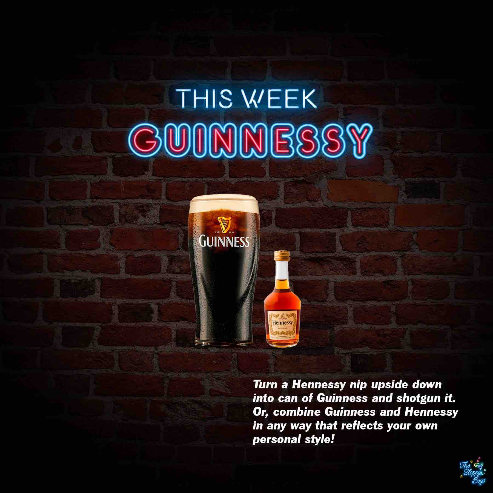

Sloppy Drinks
Podcast
About

Guinessy
Ingredients
Guinness (1 can)
Hennessy (1.75oz/50ml)
Steps
Turn a Hennessy nip upside down into can of Guinness and shotgun it.
Or, combine Guinness and Hennessy in any way that reflects your own personal style!
Notes
Episode 126 - Guinnessy (March 17, 2023)
Artwork by The Sloppy Boys